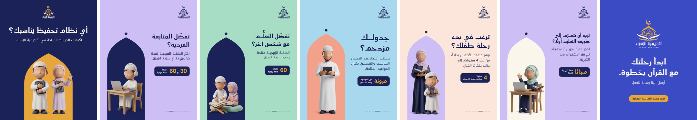
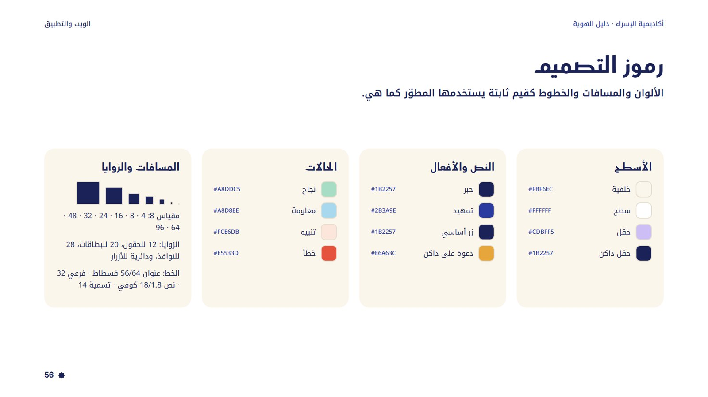
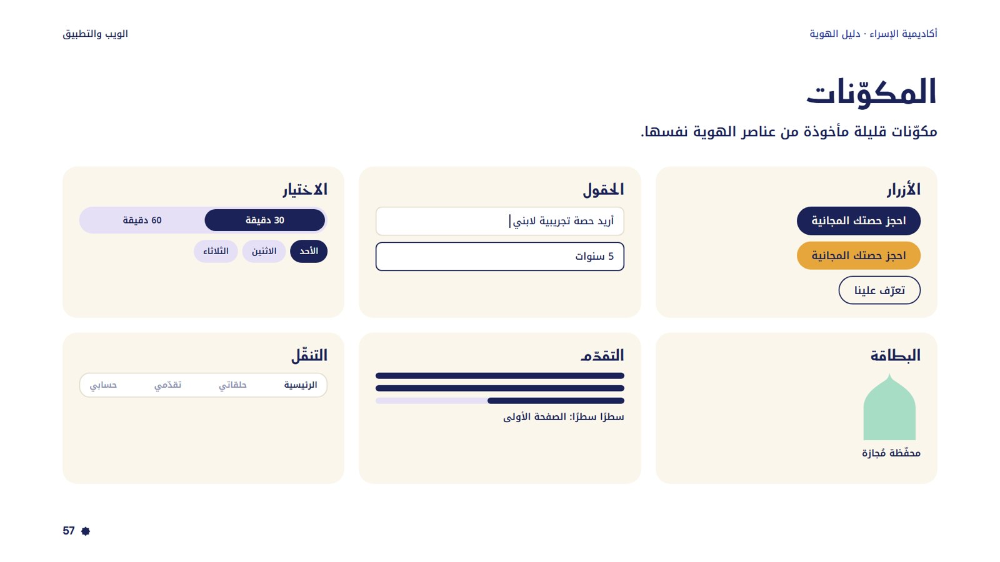
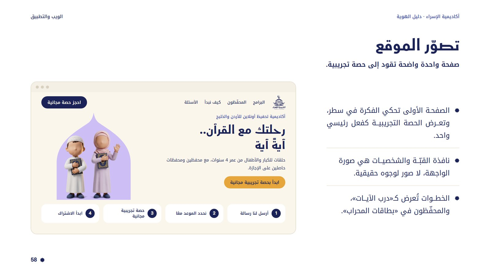
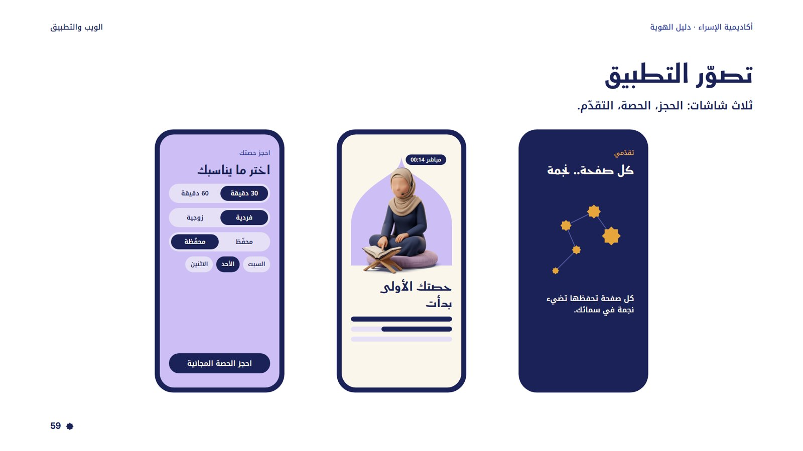

الختمة تبدو جبلًا.. فنقسمها آيات
الأهل والكبار في الأردن والخليج يحبّون أن يحفظوا القرآن ويُحفّظوه أبناءهم، لكن الختمة تبدو بعيدة، والوقت ضيّق، والكبير يستحي أن يبدأ متأخرًا. أكاديمية الإسراء تقسّم الرحلة إلى خطوات صغيرة: آيةً آية، بوقتك، ومع محفّظ تثق به.
التموضع
أكاديمية تحفيظ أونلاين للأردن والخليج، تحوّل الحفظ إلى رحلة خطوات صغيرة مع محفّظين ومحفّظات حاصلين على الإجازة، وتبدأ بحصة تجريبية مجانية.
القيم
صوت البراند
بنك الكلمات
رحلة · خطوة · آية · سطر · محفّظ ومحفّظة · مُجاز · حلقة فردية · حلقة زوجية · موعد مرن · حصة تجريبية · طمأنينة · إتقان · من بيتك
الشعارات اللفظية
قبّة فوق كتاب مفتوح
الشعار هو أصل كل عناصر الهوية: من القبّة جاءت النافذة، ومن الكتاب جاء الجناحان، ومن الهلال والنجمة جاءت سماء الإسراء. يُستخدم كما هو، ولا يُعاد رسمه أو تلوين أجزائه.
ليلي واحد: على الخلفيات الفاتحة (الورقي والباستيل).
ذهبي وأبيض: على الليلي والأزرق الملكي فقط.
أبيض واحد: فوق الصور الداكنة والأختام.
الأصل الملوّن: مرجع فقط، لأن الذهبي لا يوضع على خلفية فاتحة.
المساحة الآمنة
حول الشعار مسافة فارغة تساوي ارتفاع الهلال من كل جهة، حتى لا يزاحمه نص أو صورة.
أصغر مقاس
رقميًا: ارتفاع 96px. طباعةً: 24mm. تحت هذا تختفي حروف الاسم.
مكانه في التصميم
أعلى اليمين بارتفاع 150px على بوست 1080×1350، أو في المنتصف في التصاميم المتمركزة.
ليلٌ وورقٌ.. وذهبٌ قليل
لوحة غنية بلا ضجيج: الورقي هو المساحة، والليلي هو الحبر، والباستيل يعطي كل بوست حقله الخاص، والذهبي إشارة صغيرة لا تظهر إلا في الظلام.
أزواج الحقل والقوس المعتمدة
كل شكل يجب أن ينفصل عن حقله بتباين لا يقل عن 1.3، وكل نص بتباين لا يقل عن 4.5 (أو 3 للعناوين الكبيرة). يُفحص ذلك آليًا في كل تصميم.
فسطاط للعناوين.. وكوفي نوتو للكلام
Fustat ExtraBold · العناوين فقط · الحروف المركّبة الاختيارية معطّلة (حتى لا تقرأ «تح» كأنها «خ»).
Noto Kufi Arabic · العنوان الفرعي، النص، الأزرار، التسميات.
بلا تباعد حروف. أبدًا.
لا يضاف tracking لأي نص، ولا حتى للتسميات الصغيرة.
الكشيدة بقاعدة
تُستخدم لضبط السطر فقط حين يكون ممتلئًا بنسبة 93% فأكثر، في كلمات من 5 أحرف فأكثر، بحد أقصى كشيدتين في الكلمة وكلمتين في السطر.
الأرقام
أرقام غربية كما يكتبها العميل (4، 30، 60)، بنفس خط النص.
ست عائلات.. كلها من الشعار
لكل بوست عائلة واحدة رئيسية، ويُسمح بعنصر من عائلة ثانية كحدّ أقصى. هكذا يتنوّع الشكل وتبقى الهوية واحدة.
شخصيات بلا ملامح.. وبكامل الدفء
شخصيات ثلاثية الأبعاد بلا وجوه، بأسلوب واحد وإضاءة واحدة وظل حقيقي. تمثّل الطفل والوالد والمحفّظ والمحفّظة دون أن تمثّل شخصًا بعينه.
الظل حقيقي
الظل مأخوذ من صورة التوليد نفسها ومدموج في القصّ، ولا يُرسم ظل صناعي.
لا تُقصّ أبدًا
الشخصية كاملة دائمًا، والقدمان على حافة الكادر أو على الأرضية، والحجم يحفظ النسبة.
تباين مع القوس
الملابس الكحلية لا توضع على قوس ليلي، والبيضاء لا توضع على قوس ورقي.
ضوء البيت
رحلة الحفظ تحدث في البيت، في ضوء الصباح. صور واقعية هادئة بلا وجوه: أيدٍ ومصحف وحامل خشبي ولابتوب، وأقمشة بألوان الهوية، وقطعة كحلية واحدة في كل كادر. للموقع والإعلانات فقط، لا للسوشيال.
الضوء
نافذة جانبية واحدة، ضوء صباح ناعم، ظلال طبيعية.
الوجوه
خارج الكادر دائمًا: من الخلف، فوق الكتف، أو الأيدي فقط.
الألوان
جدران دافئة، خشب فاتح، أقمشة باستيل، وقطعة كحلية واحدة.
الصدق
تُفحص كل صورة: اليد، الحامل، الصفحة. لا نص مزيّف على الشاشات.
الصورة تمشي على الصوت
لا موسيقى ولا مؤثرات صوتية. صوت بشري واحد دافئ يقود الفيلم، وكل حركة تقع على كلمتها: السؤال يظهر حين يُقال، والإجابة تقلب الحقل إلى النهار، و«آيةً آية» تظهر مع نطقها.
حصتك الأولى
قصة بالواجهة: من رسالة الأهل إلى أول حصة.
لماذا الإسراء؟
خط واحد يقود القصة من قلق إلى إجابة.
سطرًا سطرًا
خاتمة البراند: صفحة تتحول إلى سماء.
منحنى الواجهة
cubic(0.40, 0.32, 0.48, 0.92) · حركة صغيرة 0.33s · تحوّل 0.72s · تداخل 42%
منحنى الكاميرا
cubic(0.56, 0, 0.56, 1) · انتقال حاسم 1–1.6s · استقرار خفيف عند الوصول
الصوت
كل بوست بحقله.. والشبكة واحدة
بوست 1080×1350 بهوامش 80px. عمود النص يمينًا بعرض 430px، والعنصر (القوس أو الدرب أو البطاقة) يسارًا، والزر أسفل اليمين. حقل ملوّن مختلف لكل بوست، ويتبادل الفاتح والليلي في الشبكة.

إيقاع المسافات
الشعار ثم الكلام بعد 56px، التمهيد فالعنوان 8px، العنوان فالنص 24px، والزر على بعد 72px من الحافة. لا فراغ كبير ولا تلاصق.
النص كبلوك
الفقرات والبنود تُضبط بالكشيدة لتصير بلوكًا بعرض واحد، دون أي تباعد بين الحروف.
لا تلامس
النص يبعد 48px على الأقل عن أي قوس أو ختم، ولا يوضع شكل فوق شكل من لونه.
نفس الهوية.. على الشاشة
رموز تصميم ثابتة، ومكوّنات قليلة مأخوذة من عناصر الهوية، وتصوّر لموقع يقود إلى حصة تجريبية، وتطبيق يحوّل كل صفحة محفوظة إلى نجمة.



